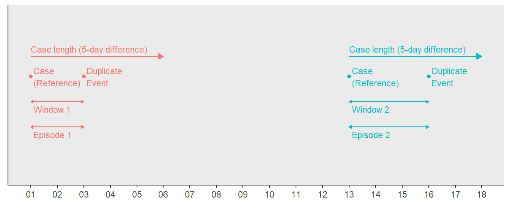
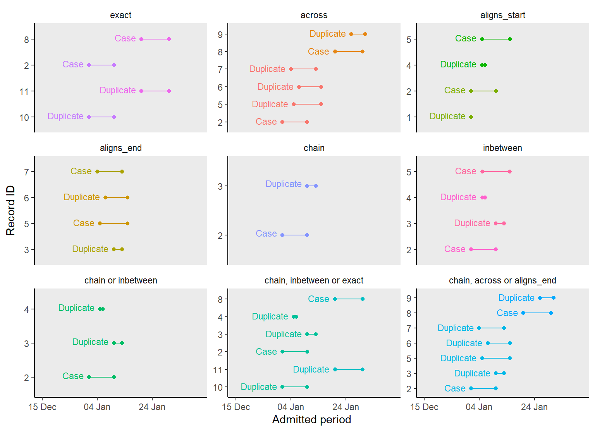
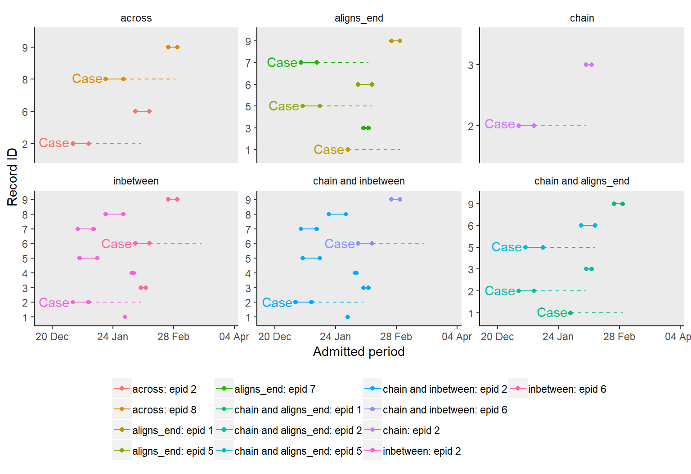

episode_group.RmdDeduplicating events is a major part of establishing a case definition in epidemiological analyses. For these analyses, you select a reference event ("Case (C)") which represents the start of an episode. Subsequent events within a specified period after the case "(C)" are taken as duplicate "(D)" events.
fixed_episodes(), rolling_episodes() and episode_group() provide a simple but flexible way of grouping records from multiple data sources into episodes. This then allows for easy deduplication or a sub-analysis within each episode.
The flexible use of record_group and the episode grouping functions allow you to apply different case definitions to a dataset. Some examples include;
recurrence_length) from the last event"Case (C)". See case assignment
case_length and/or recurrence_length for different subsets of a dataset. See stratified grouping
An episode as produced by fixed_episodes(), rolling_episodes() or episode_group() is a set of events (or periods of events) within a specific period of time. Each begins with a reference event - the "Case (C)" and may contain "Recurrent (R)" events. Events that occur between cases "(C)" and recurrent "(R)" events are considerded duplicates "(D)".
Two type of episodes can be produced;
"fixed" episodes - where "Duplicate (D)" events (or periods of events) are those within a specified period (case_length) after/before the "Case (C)". Any event after this case_length is grouped into a different episode.
"rolling" episodes - where "Duplicate (D)" events (or periods of events) are those within the case_length and a specified period of recurrence. See episodes windows and recurrence periods.
"fixed" and "rolling" episodes are created with fixed_episdoes() and rolling_episodes() respectively, while episode_group() creates both.
An episode window (epid_interval) is the period between the "Case" and the last event (or the end_point() of the last period) in the episode. A "fixed" episode is never longer than its "case_length".
A recurrence period (recurrence_length) is a period after the case_length within which repeat events are considered a recurrence of the same episode. The first event within this period is taken as the "Recurrent (R)" event and subsequent ones within the same period are considered duplicates "(D)" of that recurrent "(R)" event. This means that a rolling episode will continue to expand as far as there’s a record within the recurrence period of the last event in that episode. The last event could be a "Case (C)", "Duplicate (C)" or "Recurrent (R)" record. As a result, unlike fixed episodes, rolling episodes can be longer than their case_length. Records grouped into the same episode are assigned an episode ID. The episode ID is essentially the record ID (sn) of one of the matching records. Therefore, using a familiar record ID (sn) allows you to link the results back to the original dataset
The example below demonstrates the difference between a rolling and fixed episode.
NOTE; to_s4 and to_s4() changes these functions’ output from a data.frame (current default) to epid objects. epid objects will be the default output in the next release.
library(dplyr); library(lubridate); library(diyar)
data("infections_2")
dates <- infections_2$date
# Fixed episodes
f <- fixed_episodes(date = dates, case_length=14, group_stats = TRUE, to_s4 =TRUE)
#> Episode or recurrence window 1.
#> 3 of 6 record(s) grouped into episodes. 3 records not yet grouped.
#> Episode or recurrence window 2.
#> 2 of 3 record(s) grouped into episodes. 1 records not yet grouped.
#> Episode or recurrence window 3.
#> 1 of 1 record(s) grouped into episodes. 0 records not yet grouped.
#>
#> Episode grouping complete - 1 record(s) assinged a unique ID.
# Rolling episodes
r <- rolling_episodes(date = dates, case_length=14, group_stats = TRUE, display = FALSE, to_s4 =TRUE)
#> Episode grouping complete - 1 record(s) assinged a unique ID.
dates # dates
#> [1] "2019-04-01" "2019-04-06" "2019-04-11" "2019-04-16" "2019-04-21"
#> [6] "2019-06-04"
f # fixed episode identifiers
#> [1] "E-1 2019-04-01 -> 2019-04-11 (C)" "E-1 2019-04-01 -> 2019-04-11 (D)"
#> [3] "E-1 2019-04-01 -> 2019-04-11 (D)" "E-4 2019-04-16 -> 2019-04-21 (C)"
#> [5] "E-4 2019-04-16 -> 2019-04-21 (D)" "E-6 2019-06-04 == 2019-06-04 (C)"
r # rolling episode identifiers
#> [1] "E-1 2019-04-01 -> 2019-04-21 (C)" "E-1 2019-04-01 -> 2019-04-21 (D)"
#> [3] "E-1 2019-04-01 -> 2019-04-21 (D)" "E-1 2019-04-01 -> 2019-04-21 (R)"
#> [5] "E-1 2019-04-01 -> 2019-04-21 (D)" "E-6 2019-06-04 == 2019-06-04 (C)"In the "fixed" episodes example, records 1 to 3 are assigned a unique episode ID ("E-1") (Figure 1). In this group, record 1 is the "Case (C)" and records 2 and 3 are duplicates "(D)". This is because records 2 and 3 are within 15 days (difference of 14 days) of record 1. Record 4 occurred after this 15-day period and so begins a new "Case (C)" which is assigned a new episode ID ("E-4"). Record 5 is within 15 days of record 4, so is considered a "Duplicate (D)" of record 4 and assigned the same episode ID as record 4 ("E-4"). This process continues chronologically until all records have been assigned an episode ID.
In the "rolling" episodes example, records 1 to 3 are also grouped together as episode "E-1" however, unlike the "fixed" episode example, record 4 is assigned to episode "E-1" as a "Recurrent (R)" record. This is because it’s within 15 days (difference of 14 days) of the last "Duplicate (D)" (record 3). Record 5 is also assigned to episode "E-1" because it’s within 15 days of record 4. Record 6 is not within 15 days of the initial "Case (C)" (record 1) and not within 15 days of the last record at this stage (record 5), therefore it’s now considered a new "Case (C)" and assigned a new episode ID ("E-6").
Figure 1: "Fixed" and "rolling" episodes with their respective case_lenth and recurrence_length

If your case definition does not explicitly require a rolling episode, use fixed_episode(). It takes less time to complete.
This section covers the different ways to choose which record is taken as the "Case (C)".
You can choose to have a certain number of episodes per strata by using episode_max. When episode_max is reached, any record not yet grouped is assigned a unique episode ID, making them unique cases "(C)".
data("infections_3");
dbs <- infections_3[c("pid","date")]; dbs
#> # A tibble: 11 x 2
#> pid date
#> <dbl> <date>
#> 1 1 2019-04-01
#> 2 1 2019-04-02
#> 3 1 2019-04-03
#> 4 1 2019-04-04
#> 5 1 2019-04-05
#> 6 1 2019-04-06
#> 7 1 2019-04-07
#> 8 1 2019-04-08
#> 9 1 2019-04-09
#> 10 1 2019-04-10
#> 11 1 2019-04-11
# Maximum of one fixed episode grouping per strata
dbs$eps_1 <- fixed_episodes(strata = dbs$pid, date = dbs$date, case_length = 3, display = FALSE, episodes_max = 1, to_s4 = TRUE)
#> Episode grouping complete - 7 record(s) assinged a unique ID.
# Maximum of one rolling episode grouping per strata
dbs$eps_2 <- rolling_episodes(strata = dbs$pid, date = dbs$date, case_length = 3, display = FALSE, episodes_max = 1, to_s4 = TRUE)
#> Episode grouping complete - 0 record(s) assinged a unique ID.
# Maximum of two fixed episodes grouping per strata
dbs$eps_3 <- fixed_episodes(strata = dbs$pid, date = dbs$date, case_length = 3, display = FALSE, episodes_max = 2, to_s4 = TRUE)
#> Episode grouping complete - 3 record(s) assinged a unique ID.
dbs
#> # A tibble: 11 x 5
#> pid date eps_1 eps_2 eps_3
#> <dbl> <date> <epid> <epid> <epid>
#> 1 1 2019-04-01 E-01 (C) E-1 (C) E-01 (C)
#> 2 1 2019-04-02 E-01 (D) E-1 (D) E-01 (D)
#> 3 1 2019-04-03 E-01 (D) E-1 (D) E-01 (D)
#> 4 1 2019-04-04 E-01 (D) E-1 (D) E-01 (D)
#> 5 1 2019-04-05 E-05 (C) E-1 (R) E-05 (C)
#> 6 1 2019-04-06 E-06 (C) E-1 (D) E-05 (D)
#> 7 1 2019-04-07 E-07 (C) E-1 (D) E-05 (D)
#> 8 1 2019-04-08 E-08 (C) E-1 (R) E-05 (D)
#> 9 1 2019-04-09 E-09 (C) E-1 (D) E-09 (C)
#> 10 1 2019-04-10 E-10 (C) E-1 (D) E-10 (C)
#> 11 1 2019-04-11 E-11 (C) E-1 (R) E-11 (C)By default, rolling_episodes() will continue checking for "Recurrent" (R) records indefinitely, but you can limit the number of recurrence periods in an episode by using rolls_max.
# Infinite recurrence periods per episode (Default)
dbs$eps_4 <- rolling_episodes(strata = dbs$pid, date =dbs$date, case_length = 2,display = FALSE, to_s4 = TRUE)
#> Episode grouping complete - 0 record(s) assinged a unique ID.
# Maximum of one recurrence period per episode
dbs$eps_5 <- rolling_episodes(strata = dbs$pid, date =dbs$date, case_length = 2,display = FALSE,
rolls_max = 1, to_s4 = TRUE)
#> Episode grouping complete - 1 record(s) assinged a unique ID.
# Maximum of two recurrence periods per episode
dbs$eps_6 <- rolling_episodes(strata = dbs$pid, date =dbs$date, case_length = 2,display = FALSE,
rolls_max = 2, to_s4 = TRUE)
#> Episode grouping complete - 0 record(s) assinged a unique ID.
dbs
#> # A tibble: 11 x 8
#> pid date eps_1 eps_2 eps_3 eps_4 eps_5 eps_6
#> <dbl> <date> <epid> <epid> <epid> <epid> <epid> <epid>
#> 1 1 2019-04-01 E-01 (C) E-1 (C) E-01 (C) E-1 (C) E-01 (C) E-1 (C)
#> 2 1 2019-04-02 E-01 (D) E-1 (D) E-01 (D) E-1 (D) E-01 (D) E-1 (D)
#> 3 1 2019-04-03 E-01 (D) E-1 (D) E-01 (D) E-1 (D) E-01 (D) E-1 (D)
#> 4 1 2019-04-04 E-01 (D) E-1 (D) E-01 (D) E-1 (R) E-01 (R) E-1 (R)
#> 5 1 2019-04-05 E-05 (C) E-1 (R) E-05 (C) E-1 (D) E-01 (D) E-1 (D)
#> 6 1 2019-04-06 E-06 (C) E-1 (D) E-05 (D) E-1 (R) E-06 (C) E-1 (R)
#> 7 1 2019-04-07 E-07 (C) E-1 (D) E-05 (D) E-1 (D) E-06 (D) E-1 (D)
#> 8 1 2019-04-08 E-08 (C) E-1 (R) E-05 (D) E-1 (R) E-06 (D) E-8 (C)
#> 9 1 2019-04-09 E-09 (C) E-1 (D) E-09 (C) E-1 (D) E-06 (R) E-8 (D)
#> 10 1 2019-04-10 E-10 (C) E-1 (D) E-10 (C) E-1 (R) E-06 (D) E-8 (D)
#> 11 1 2019-04-11 E-11 (C) E-1 (R) E-11 (C) E-1 (D) E-11 (C) E-8 (R)By default, episode grouping begins at the earliest event (or period of event) and proceeds to the most recent one, making the earliest event the "Case (C)". The opposite of this is to begin episode grouping at the most recent record (making it the case "(C)") and then proceed backwards in time. To do this, change from_last to TRUE.
dbs <- infections_2[c("date")]; dbs
#> # A tibble: 6 x 1
#> date
#> <date>
#> 1 2019-04-01
#> 2 2019-04-06
#> 3 2019-04-11
#> 4 2019-04-16
#> 5 2019-04-21
#> 6 2019-06-04
# Episode grouping in chronological order
dbs$forward <- fixed_episodes(date=dbs$date, case_length= 14,
group_stats = TRUE, display = FALSE, to_s4=TRUE)
#> Episode grouping complete - 1 record(s) assinged a unique ID.
# Episode grouping in reverse chronological order
dbs$backward <- fixed_episodes(date=dbs$date, case_length= 14, group_stats = TRUE, display = FALSE,
from_last=TRUE, to_s4=TRUE)
#> Episode grouping complete - 1 record(s) assinged a unique ID.
dbs[c("forward","backward")]
#> # A tibble: 6 x 2
#> forward backward
#> <epid> <epid>
#> 1 E-1 2019-04-01 -> 2019-04-11 (C) E-2 2019-04-06 <- 2019-04-01 (D)
#> 2 E-1 2019-04-01 -> 2019-04-11 (D) E-2 2019-04-06 <- 2019-04-01 (C)
#> 3 E-1 2019-04-01 -> 2019-04-11 (D) E-5 2019-04-21 <- 2019-04-11 (D)
#> 4 E-4 2019-04-16 -> 2019-04-21 (C) E-5 2019-04-21 <- 2019-04-11 (D)
#> 5 E-4 2019-04-16 -> 2019-04-21 (D) E-5 2019-04-21 <- 2019-04-11 (C)
#> 6 E-6 2019-06-04 == 2019-06-04 (C) E-6 2019-06-04 == 2019-06-04 (C)You can use a specific preference for case assignment by using custom_sort. In fixed_episodes() and rolling_episodes(), this is a vector whose values when sorted in ascending order specifies the required preference. For example, records with a custom_sort value of 1 will be preferentially taken as the start of an episode over one with a value of 2. This is prioritised over the chronological order of those records. See the example below.
dates <- c("01/04/2019", "05/04/2019", "07/04/2019")
dates <- as.Date(dates,"%d/%m/%Y")
user_sort <- c(2,1,2)
dates
#> [1] "2019-04-01" "2019-04-05" "2019-04-07"
# preference determined by from_last
fixed_episodes(date=dates, case_length=6, to_s4=TRUE, display=FALSE, group_stats = TRUE)
#> Episode grouping complete - 0 record(s) assinged a unique ID.
#> [1] "E-1 2019-04-01 -> 2019-04-07 (C)" "E-1 2019-04-01 -> 2019-04-07 (D)"
#> [3] "E-1 2019-04-01 -> 2019-04-07 (D)"
# user defined preference via custom sort is prioritised before from_last
fixed_episodes(date=dates, case_length=6, to_s4=TRUE, custom_sort = user_sort, display=FALSE, group_stats = TRUE)
#> Episode grouping complete - 1 record(s) assinged a unique ID.
#> [1] "E-1 2019-04-01 == 2019-04-01 (C)" "E-2 2019-04-05 -> 2019-04-07 (C)"
#> [3] "E-2 2019-04-05 -> 2019-04-07 (D)"
# user defined preference via custom sort is prioritised before from_last.
# Duplicates are flagged from both directions
fixed_episodes(date=dates, case_length=6, to_s4=TRUE, custom_sort = user_sort, display=FALSE,
bi_direction = TRUE, group_stats = TRUE)
#> Episode grouping complete - 0 record(s) assinged a unique ID.
#> [1] "E-2 2019-04-01 -> 2019-04-07 (D)" "E-2 2019-04-01 -> 2019-04-07 (C)"
#> [3] "E-2 2019-04-01 -> 2019-04-07 (D)"In the second example, even though the second record occurred after the first, episode grouping began at the second one. This was because the custom_sort value (user_sort) for the second record was lower than that of the first.
A consequence of using custom_sort this way was that record 1 was not grouped together with record 2 even though it was within the case_length of record 2. This is because duplicates are tracked in one direction determined by from_last. To track duplicates from both directions use bi_direction as shown in the third example.
Note that examples 1 and 3 results in the same number of duplicates (and episodes) but different cases - records 1 and 2 respectively.
custom_sort will follow R standard sort behaviour. For example, a factor will sort on its levels not the descriptive label.
For a practical example, we’ll use this feature on a case definition where E. coli urinary tract infections (UTI) are considered precursors to E. coli bloodstream infections (BSI). This means that episodes need to be created in such a way that; if there are UTI and BSI records within the same case_length, the UTI record will be taken as the "Case (C)".
dbs <- infections_2[c("date","infx")]
dbs$infx <- gsub("E. coli ","",dbs$infx)
dbs$infx[c(2,5)] <- "UTI"
dbs
#> # A tibble: 6 x 2
#> date infx
#> <date> <chr>
#> 1 2019-04-01 BSI
#> 2 2019-04-06 UTI
#> 3 2019-04-11 BSI
#> 4 2019-04-16 BSI
#> 5 2019-04-21 UTI
#> 6 2019-06-04 BSI
dbs$epids_1 <- fixed_episodes(date=dbs$date, case_length=14,
custom_sort = dbs$infx, display = FALSE, to_s4 = TRUE)
#> Episode grouping complete - 1 record(s) assinged a unique ID.
dbs$infx_f <- factor(dbs$infx, levels = c("UTI","BSI"))
dbs$epids_2 <- fixed_episodes(date=dbs$date, case_length=14,
custom_sort = dbs$infx_f, display = FALSE, to_s4 = TRUE)
#> Episode grouping complete - 3 record(s) assinged a unique ID.
dbs$epids_3 <- fixed_episodes(date=dbs$date, case_length=14,
custom_sort = dbs$infx_f, display = FALSE, to_s4 = TRUE, bi_direction = TRUE)
#> Episode grouping complete - 2 record(s) assinged a unique ID.
dbs
#> # A tibble: 6 x 6
#> date infx epids_1 infx_f epids_2 epids_3
#> <date> <chr> <epid> <fct> <epid> <epid>
#> 1 2019-04-01 BSI E-1 (C) BSI E-1 (C) E-2 (D)
#> 2 2019-04-06 UTI E-1 (D) UTI E-2 (C) E-2 (C)
#> 3 2019-04-11 BSI E-1 (D) BSI E-2 (D) E-2 (D)
#> 4 2019-04-16 BSI E-4 (C) BSI E-2 (D) E-2 (D)
#> 5 2019-04-21 UTI E-4 (D) UTI E-5 (C) E-5 (C)
#> 6 2019-06-04 BSI E-6 (C) BSI E-6 (C) E-6 (C)In epids_2, after changing the sort preference using factor levels (infx_f), record 1 (E. coli BSI) and record 2 (E. coli UTI) are no longer part of the same episode. This is because record 2, is now the reference record where episode grouping began, and since record 1 occurred before record 2, they are not grouped together. epids_3 is episode grouping when bi_direction is used.
In episode_group(), you can implement custom_sort in levels. You’ll need to create a column for each level. The column names are then supplied to custom_sort in the required order (level)
In this section we discuss the process of grouping periods of events into episodes. Each period/interval is essentially a record with a start_point() and end_point() in time. For the purpose of episode grouping, these periods are created as number_line objects and supplied to the date argument. Overlapping periods/intervals are merged into one.
Below are simple examples;
dates <- as.Date(c("01/04/2019", "05/04/2019"), "%d/%M/%Y")
dates
#> [1] "2019-01-01" "2019-01-05"
# A 10-day period from each date
periods <- number_line(dates, dates + 10)
periods
#> [1] "2019-01-01 -> 2019-01-11" "2019-01-05 -> 2019-01-15"
# Grouping events
fixed_episodes(date=dates, case_length=30, to_s4=TRUE, display=FALSE, group_stat=TRUE)
#> Episode grouping complete - 0 record(s) assinged a unique ID.
#> [1] "E-1 2019-01-01 -> 2019-01-05 (C)" "E-1 2019-01-01 -> 2019-01-05 (D)"
# Grouping periods
fixed_episodes(date=periods, case_length=30, to_s4=TRUE, display=FALSE, group_stat=TRUE)
#> Episode grouping complete - 0 record(s) assinged a unique ID.
#> [1] "E-1 2019-01-01 -> 2019-01-15 (C)" "E-1 2019-01-01 -> 2019-01-15 (D)"For a practical example, below are periods of hospital stay which have been grouped into episodes. This is different from grouping the actual admission or discharge events.
hos_admin <- diyar::hospital_admissions
hos_admin$admin_period <- number_line(hos_admin$admin_dt, hos_admin$discharge_dt)
hos_admin
#> # A tibble: 11 x 5
#> rd_id admin_dt discharge_dt epi_len admin_period
#> <int> <date> <date> <dbl> <numbr_ln>
#> 1 1 2019-01-01 2019-01-01 0 2019-01-01 == 2019-01-01
#> 2 2 2019-01-01 2019-01-10 0 2019-01-01 -> 2019-01-10
#> 3 3 2019-01-10 2019-01-13 0 2019-01-10 -> 2019-01-13
#> 4 4 2019-01-05 2019-01-06 0 2019-01-05 -> 2019-01-06
#> 5 5 2019-01-05 2019-01-15 0 2019-01-05 -> 2019-01-15
#> 6 6 2019-01-07 2019-01-15 0 2019-01-07 -> 2019-01-15
#> 7 7 2019-01-04 2019-01-13 0 2019-01-04 -> 2019-01-13
#> 8 8 2019-01-20 2019-01-30 0 2019-01-20 -> 2019-01-30
#> 9 9 2019-01-26 2019-01-31 0 2019-01-26 -> 2019-01-31
#> 10 10 2019-01-01 2019-01-10 0 2019-01-01 -> 2019-01-10
#> 11 11 2019-01-20 2019-01-30 0 2019-01-20 -> 2019-01-30
# Grouping the actual admissions into episodes
fixed_episodes(date=hos_admin$admin_dt, sn=hos_admin$rd_id, case_length=0,
display=FALSE, to_s4=TRUE, group_stats=TRUE)
#> Episode grouping complete - 4 record(s) assinged a unique ID.
#> [1] "E-1 2019-01-01 == 2019-01-01 (C)" "E-1 2019-01-01 == 2019-01-01 (D)"
#> [3] "E-3 2019-01-10 == 2019-01-10 (C)" "E-4 2019-01-05 == 2019-01-05 (C)"
#> [5] "E-4 2019-01-05 == 2019-01-05 (D)" "E-6 2019-01-07 == 2019-01-07 (C)"
#> [7] "E-7 2019-01-04 == 2019-01-04 (C)" "E-8 2019-01-20 == 2019-01-20 (C)"
#> [9] "E-9 2019-01-26 == 2019-01-26 (C)" "E-1 2019-01-01 == 2019-01-01 (D)"
#> [11] "E-8 2019-01-20 == 2019-01-20 (D)"
# Grouping the periods of stay (admission -> discharge)
fixed_episodes(date=hos_admin$admin_period, sn=hos_admin$rd_id, case_length = 0,
display=FALSE, to_s4=TRUE, group_stats=TRUE)
#> Episode grouping complete - 0 record(s) assinged a unique ID.
#> [1] "E-2 2019-01-01 -> 2019-01-15 (D)" "E-2 2019-01-01 -> 2019-01-15 (C)"
#> [3] "E-2 2019-01-01 -> 2019-01-15 (D)" "E-2 2019-01-01 -> 2019-01-15 (D)"
#> [5] "E-2 2019-01-01 -> 2019-01-15 (D)" "E-2 2019-01-01 -> 2019-01-15 (D)"
#> [7] "E-2 2019-01-01 -> 2019-01-15 (D)" "E-8 2019-01-20 -> 2019-01-31 (C)"
#> [9] "E-8 2019-01-20 -> 2019-01-31 (D)" "E-2 2019-01-01 -> 2019-01-15 (D)"
#> [11] "E-8 2019-01-20 -> 2019-01-31 (D)"There are 6 ways periods/intervals can overlap (overlap_methods). These are "exact", "across", "inbetween", "chain", "aligns_start" and "aligns_end". Only periods that overlap by the specified method will be grouped into the same episode. You can use any combination of 6 methods but the default option is to use all 6. The examples below demonstrates this.
# wrapper function to use with lapply
epi_grp_func <- function(x){
fixed_episodes(date=hos_admin$admin_period,
sn=hos_admin$rd_id,
case_length = 0,
overlap_methods = x,
display = FALSE,
to_s4 = TRUE,
group_stats = TRUE)
}
# Methods
methods <- list(
# Identical intervals
exact = "exact",
# Overlapping intervals
across= "across",
# Intervals with aligned start points
aligns_start = "aligns_start",
# Intervals with aligned end points
aligns_end = "aligns_end",
# Chained intervals
chain = "chain",
# Intervals occurring completely within others
inbetween = "inbetween",
# Chained intervals and those occurring completely within others
cb1 = "chain|inbetween",
# Chained intervals, identical intervals and those occurring completely within others
cb2 = "exact|chain|inbetween",
# Chained intervals, identical intervals and those with aligned end point
cb3 = "across|chain|aligns_end"
)
epids <- lapply(methods, epi_grp_func)
#> Episode grouping complete - 7 record(s) assinged a unique ID.
#> Episode grouping complete - 5 record(s) assinged a unique ID.
#> Episode grouping complete - 7 record(s) assinged a unique ID.
#> Episode grouping complete - 7 record(s) assinged a unique ID.
#> Episode grouping complete - 9 record(s) assinged a unique ID.
#> Episode grouping complete - 7 record(s) assinged a unique ID.
#> Episode grouping complete - 8 record(s) assinged a unique ID.
#> Episode grouping complete - 5 record(s) assinged a unique ID.
#> Episode grouping complete - 4 record(s) assinged a unique ID.
names(epids) <- names(methods)
# Results
epids["chain"]
#> $chain
#> [1] "E-01 2019-01-01 == 2019-01-01 (C)"
#> [2] "E-02 2019-01-01 -> 2019-01-13 (C)"
#> [3] "E-02 2019-01-01 -> 2019-01-13 (D)"
#> [4] "E-04 2019-01-05 -> 2019-01-06 (C)"
#> [5] "E-05 2019-01-05 -> 2019-01-15 (C)"
#> [6] "E-06 2019-01-07 -> 2019-01-15 (C)"
#> [7] "E-07 2019-01-04 -> 2019-01-13 (C)"
#> [8] "E-08 2019-01-20 -> 2019-01-30 (C)"
#> [9] "E-09 2019-01-26 -> 2019-01-31 (C)"
#> [10] "E-10 2019-01-01 -> 2019-01-10 (C)"
#> [11] "E-11 2019-01-20 -> 2019-01-30 (C)"
epids["cb2"]
#> $cb2
#> [1] "E-1 2019-01-01 == 2019-01-01 (C)" "E-2 2019-01-01 -> 2019-01-13 (C)"
#> [3] "E-2 2019-01-01 -> 2019-01-13 (D)" "E-2 2019-01-01 -> 2019-01-13 (D)"
#> [5] "E-5 2019-01-05 -> 2019-01-15 (C)" "E-6 2019-01-07 -> 2019-01-15 (C)"
#> [7] "E-7 2019-01-04 -> 2019-01-13 (C)" "E-8 2019-01-20 -> 2019-01-30 (C)"
#> [9] "E-9 2019-01-26 -> 2019-01-31 (C)" "E-2 2019-01-01 -> 2019-01-13 (D)"
#> [11] "E-8 2019-01-20 -> 2019-01-30 (D)"
# All results in the Figure 2 belowFigure 2: Different options for overlap_methods 
case_length in interval grouping works in a similar manner. See Figure 3 below (grouped episodes only).
Figure 3: Positive and negative case_length in interval grouping 
Episode grouping can be done separately for different subsets (strata) of a dataset. Examples of a strata could be patient IDs, pathogen, source of infection or any combination of these. Episodes will be limited to each strata however, episodes from different strata can have a different case_length and/or recurrence_length.
record_group() is useful for creating group identifiers which can be used as a strata. See record group for further details.
As an example, using the infections dataset, a case definition may specify the following;
case_length of 8 days and recurrence period of 31 dayscase_length of 15 days and no recurrence periodIn the example below, adding infection to the strata argument means that "UTI" and "BSI" records will not be in the same episode. Furthermore, the case_length and recurrence_length for each will be different as specified in the epi and recur columns respectively
data(infections)
dbs <- infections[c("date","infection")]
dbs <- dbs[dbs$infection%in% c("UTI","BSI"),]
dbs$epi <- ifelse(dbs$infection=="UTI", 7, 14)
dbs$recur <- ifelse(dbs$infection=="UTI", 30, 0)
dbs$epids <- rolling_episodes(date=dbs$date, case_length =dbs$epi, to_s4 =TRUE,
recurrence_length = dbs$recur, display = FALSE, group_stats = TRUE)
#> Episode grouping complete - 1 record(s) assinged a unique ID.
dbs
#> # A tibble: 9 x 5
#> date infection epi recur epids
#> <date> <chr> <dbl> <dbl> <epid>
#> 1 2018-04-01 BSI 14 0 E-1 2018-04-01 -> 2018-05-13 (C)
#> 2 2018-04-07 UTI 7 30 E-1 2018-04-01 -> 2018-05-13 (D)
#> 3 2018-04-13 UTI 7 30 E-1 2018-04-01 -> 2018-05-13 (D)
#> 4 2018-04-19 UTI 7 30 E-1 2018-04-01 -> 2018-05-13 (R)
#> 5 2018-04-25 BSI 14 0 E-1 2018-04-01 -> 2018-05-13 (D)
#> 6 2018-05-01 UTI 7 30 E-1 2018-04-01 -> 2018-05-13 (D)
#> 7 2018-05-07 BSI 14 0 E-1 2018-04-01 -> 2018-05-13 (D)
#> 8 2018-05-13 BSI 14 0 E-1 2018-04-01 -> 2018-05-13 (D)
#> 9 2018-05-31 BSI 14 0 E-9 2018-05-31 == 2018-05-31 (C)A sub-strata is created when records within a strata have a different case_length or recurrence_length. The case definition below demonstrates how you can take advantage of this.
case_length of 8 days and recurrence period of 31 dayscase_length of 15 days if not treated OR a case_length of 5 days if treated. In both situations there is no recurrence period.case_length of 29 days and recurrence period of 6 daysIn this example, whether or not the infection is treated should be viewed as the sub-strata, and the source of infection as the strata.
data("infections_4");
dbs <- infections_4
dbs$epids <- episode_group(infections_4, sn=rid, strata=c(pid, organism, source), date=date,
case_length =epi, episode_type = "rolling", recurrence_length = recur,
display = FALSE, to_s4 = TRUE)
#> Episode grouping complete - 3 record(s) assinged a unique ID.
dbs
#> # A tibble: 11 x 9
#> rid date pid organism source treated epi recur epids
#> <int> <date> <dbl> <chr> <chr> <chr> <dbl> <dbl> <epid>
#> 1 1 2019-04-01 1 E. coli UTI - 7 30 E-01 (C)
#> 2 2 2019-04-06 1 E. coli UTI - 7 30 E-01 (D)
#> 3 3 2019-04-11 1 E. coli BSI Y 4 0 E-03 (C)
#> 4 4 2019-04-16 1 E. coli BSI N 14 0 E-04 (C)
#> 5 5 2019-04-21 1 E. coli BSI Y 4 0 E-04 (D)
#> 6 6 2019-04-26 1 E. coli RTI Y 28 5 E-06 (C)
#> 7 7 2019-05-01 1 E. coli RTI N 28 5 E-06 (D)
#> 8 8 2019-05-06 1 E. coli BSI Y 4 0 E-08 (C)
#> 9 9 2019-05-11 1 E. coli BSI N 14 0 E-09 (C)
#> 10 10 2019-05-16 1 E. coli UTI N 7 30 E-10 (C)
#> 11 11 2019-05-21 1 E. coli UTI N 7 30 E-10 (D)There are a few things to note with stratified grouping;
case_length and recurrence_length should be consistent across each strata otherwise, you’ll inadvertently create a sub-stratastrata argument. In the example above, adding treated to strata will group treated infections separately from untreated infections. While this could be the desired outcome depending on your case definition, the case definition above did not required treated and untreated infections to be grouped separately, only that the treated infections last longer.Stratified grouping is the same as doing a separate analysis for each subset (strata) of the dataset.
In the examples above, episode grouping was done by days (episode_unit). However, it can be done by other units of time e.g. hours, days or weeks. Acceptable options are those supported by lubridate's duration() function. Below is an example of episode grouping by the hour.
data("hourly_data"); dbs <- hourly_data
dbs[c("datetime", "category")]
#> datetime category
#> 1 2019-04-01 00:00:00 GP1
#> 2 2019-04-01 02:00:00 GP2
#> 3 2019-04-01 04:00:00 GP1
#> 4 2019-04-01 06:00:00 GP2
#> 5 2019-04-01 08:00:00 GP1
#> 6 2019-04-01 10:00:00 GP2
#> 7 2019-04-01 12:00:00 GP1
#> 8 2019-04-01 14:00:00 GP2
#> 9 2019-04-01 16:00:00 GP3
#> 10 2019-04-01 18:00:00 GP3
#> 11 2019-04-01 20:00:00 GP3
#> 12 2019-04-01 22:00:00 GP3
#> 13 2019-04-02 00:00:00 GP3
rolling_episodes(strata = dbs$category, date = dbs$datetime, case_length = 5,
episode_unit = "hours", recurrence_length = 9, group_stats = TRUE, to_s4 = TRUE, display = FALSE)
#> Episode grouping complete - 0 record(s) assinged a unique ID.
#> [1] "E-1 2019-04-01 00:00:00 -> 2019-04-01 12:00:00 (C)"
#> [2] "E-2 2019-04-01 02:00:00 -> 2019-04-01 14:00:00 (C)"
#> [3] "E-1 2019-04-01 00:00:00 -> 2019-04-01 12:00:00 (D)"
#> [4] "E-2 2019-04-01 02:00:00 -> 2019-04-01 14:00:00 (D)"
#> [5] "E-1 2019-04-01 00:00:00 -> 2019-04-01 12:00:00 (R)"
#> [6] "E-2 2019-04-01 02:00:00 -> 2019-04-01 14:00:00 (R)"
#> [7] "E-1 2019-04-01 00:00:00 -> 2019-04-01 12:00:00 (D)"
#> [8] "E-2 2019-04-01 02:00:00 -> 2019-04-01 14:00:00 (D)"
#> [9] "E-9 2019-04-01 16:00:00 -> 2019-04-02 00:00:00 (C)"
#> [10] "E-9 2019-04-01 16:00:00 -> 2019-04-02 00:00:00 (D)"
#> [11] "E-9 2019-04-01 16:00:00 -> 2019-04-02 00:00:00 (D)"
#> [12] "E-9 2019-04-01 16:00:00 -> 2019-04-02 00:00:00 (R)"
#> [13] "E-9 2019-04-01 16:00:00 -> 2019-04-02 00:00:00 (D)"For example, with the hourly_data dataset, you can decide to exclude "GP1" and "GP2" records from episode grouping as shown below. Records excluded from episode grouping this way are assigned unique episode IDs.
dbs <- head(hourly_data[c("datetime","category")], 10)
dbs$subset <- ifelse(dbs$category!="GP3", NA, "group")
dbs$epids <- rolling_episodes(strata= dbs$subset, date = dbs$datetime, case_length = 5, episode_unit = "hours",
recurrence_length = 9, display = TRUE, group_stats = TRUE, to_s4 = TRUE)
#> Episode or recurrence window 1.
#> 2 of 2 record(s) grouped into episodes. 0 records not yet grouped.
#>
#> Episode grouping complete - 8 record(s) assinged a unique ID.
dbs
#> datetime category subset
#> 1 2019-04-01 00:00:00 GP1 <NA>
#> 2 2019-04-01 02:00:00 GP2 <NA>
#> 3 2019-04-01 04:00:00 GP1 <NA>
#> 4 2019-04-01 06:00:00 GP2 <NA>
#> 5 2019-04-01 08:00:00 GP1 <NA>
#> 6 2019-04-01 10:00:00 GP2 <NA>
#> 7 2019-04-01 12:00:00 GP1 <NA>
#> 8 2019-04-01 14:00:00 GP2 <NA>
#> 9 2019-04-01 16:00:00 GP3 group
#> 10 2019-04-01 18:00:00 GP3 group
#> epids
#> 1 E-1 2019-04-01 00:00:00 == 2019-04-01 00:00:00 (C)
#> 2 E-2 2019-04-01 02:00:00 == 2019-04-01 02:00:00 (C)
#> 3 E-3 2019-04-01 04:00:00 == 2019-04-01 04:00:00 (C)
#> 4 E-4 2019-04-01 06:00:00 == 2019-04-01 06:00:00 (C)
#> 5 E-5 2019-04-01 08:00:00 == 2019-04-01 08:00:00 (C)
#> 6 E-6 2019-04-01 10:00:00 == 2019-04-01 10:00:00 (C)
#> 7 E-7 2019-04-01 12:00:00 == 2019-04-01 12:00:00 (C)
#> 8 E-8 2019-04-01 14:00:00 == 2019-04-01 14:00:00 (C)
#> 9 E-9 2019-04-01 16:00:00 -> 2019-04-01 18:00:00 (C)
#> 10 E-9 2019-04-01 16:00:00 -> 2019-04-01 18:00:00 (D)strata from record_group()
You can used pid objects from record_group() as a strata.
data(infections)
dbs <- infections[c("date","infection")]; dbs
#> # A tibble: 11 x 2
#> date infection
#> <date> <chr>
#> 1 2018-04-01 BSI
#> 2 2018-04-07 UTI
#> 3 2018-04-13 UTI
#> 4 2018-04-19 UTI
#> 5 2018-04-25 BSI
#> 6 2018-05-01 UTI
#> 7 2018-05-07 BSI
#> 8 2018-05-13 BSI
#> 9 2018-05-19 RTI
#> 10 2018-05-25 RTI
#> 11 2018-05-31 BSI
# familiar unique record ids for reference - optional
dbs$rd_id <- c(640,17,58,21,130,79,45,300,40,13,31)
# strata based on matching sources of infection
dbs$pids <- record_group(dbs, sn = rd_id, criteria = infection, to_s4 = TRUE, display = FALSE)
#> Record grouping complete - 0 record(s) assigned a group unique ID.
# stratified grouping
dbs$epids <- fixed_episodes(sn = dbs$rd_id, date = dbs$date, strata = dbs$pids,
to_s4 = TRUE, display = FALSE, group_stats = TRUE, case_length = 10)
#> Episode grouping complete - 5 record(s) assinged a unique ID.
dbs
#> # A tibble: 11 x 5
#> date infection rd_id pids
#> <date> <chr> <dbl> <pid>
#> 1 2018-04-01 BSI 640 P-31 (CRI 01)
#> 2 2018-04-07 UTI 17 P-17 (CRI 01)
#> 3 2018-04-13 UTI 58 P-17 (CRI 01)
#> 4 2018-04-19 UTI 21 P-17 (CRI 01)
#> 5 2018-04-25 BSI 130 P-31 (CRI 01)
#> 6 2018-05-01 UTI 79 P-17 (CRI 01)
#> 7 2018-05-07 BSI 45 P-31 (CRI 01)
#> 8 2018-05-13 BSI 300 P-31 (CRI 01)
#> 9 2018-05-19 RTI 40 P-13 (CRI 01)
#> 10 2018-05-25 RTI 13 P-13 (CRI 01)
#> 11 2018-05-31 BSI 31 P-31 (CRI 01)
#> # ... with 1 more variable: epids <epid>numeric values for the date argumentdate and datetime objects are fundamentally numeric values within the context of a reference point (as.Date(..., origin)). The episode grouping process ignores this context and instead uses each value as a reference point for others. Therefore, it will allow you use numeric values instead of date or datetime values for the date argument. For example, if you use 0-2, it does not matter what they represent i.e. number of days from a particular date or number of seconds from a particular time. It only matters that 0 is before 1, which in turn is before 2. When the functions are used this way, the episode_unit argument is ignored.
vals <- c(8.1,6,12,8.5,12,3,8,15,5,7)
vals
#> [1] 8.1 6.0 12.0 8.5 12.0 3.0 8.0 15.0 5.0 7.0
fixed_episodes(vals, case_length = .5, group_stats = T, to_s4 = T, display = F)
#> Episode grouping complete - 5 record(s) assinged a unique ID.
#> [1] "E-07 8 -> 8.5 (D)" "E-02 6 == 6 (C)" "E-03 12 == 12 (C)"
#> [4] "E-07 8 -> 8.5 (D)" "E-03 12 == 12 (D)" "E-06 3 == 3 (C)"
#> [7] "E-07 8 -> 8.5 (C)" "E-08 15 == 15 (C)" "E-09 5 == 5 (C)"
#> [10] "E-10 7 == 7 (C)"
fixed_episodes(vals, case_length = 5, group_stats = T, to_s4 = T, display = F)
#> Episode grouping complete - 1 record(s) assinged a unique ID.
#> [1] "E-1 8.1 -> 12 (C)" "E-6 3 -> 8 (D)" "E-1 8.1 -> 12 (D)"
#> [4] "E-1 8.1 -> 12 (D)" "E-1 8.1 -> 12 (D)" "E-6 3 -> 8 (C)"
#> [7] "E-6 3 -> 8 (D)" "E-8 15 == 15 (C)" "E-6 3 -> 8 (D)"
#> [10] "E-6 3 -> 8 (D)"
fixed_episodes(vals, case_length = 100, group_stats = T, to_s4 = T, display = F)
#> Episode grouping complete - 0 record(s) assinged a unique ID.
#> [1] "E-6 3 -> 15 (D)" "E-6 3 -> 15 (D)" "E-6 3 -> 15 (D)"
#> [4] "E-6 3 -> 15 (D)" "E-6 3 -> 15 (D)" "E-6 3 -> 15 (C)"
#> [7] "E-6 3 -> 15 (D)" "E-6 3 -> 15 (D)" "E-6 3 -> 15 (D)"
#> [10] "E-6 3 -> 15 (D)"There are a variety of ways to use these function. Before beginning, It’s worth reviewing your case definition and its implication on the dataset. In general, the following steps will guide you on how to use them;
strata
"fixed" or "rolling" episodesnumber_line object as required. See interval grouping
case_length, and/or recurrence_length. The values should be unique to each strata unless you require a sub-strata
from_last to TRUE if you want to start episode grouping at the most recent record thereby making it the "Case". Note that this is not the same as starting episode grouping at the earliest record (from_last is FALSE) and then picking the most recent record in that episode as the "case". See case assignment
"Case" to be the earliest or most recent record of a particular type of record, use custom_sort in combination with from_last. If not, ignore this argument. See user defined case assignment
"Case" use bi_direction. If not, ignore this argumentepisode_unit accordingly. Be sure to supply a datetime to the date argument if episode_unit is less than “days”